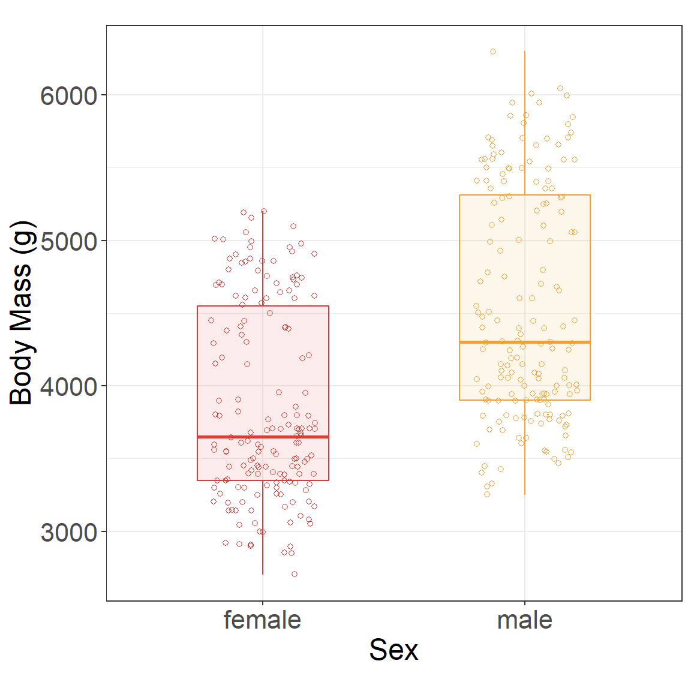
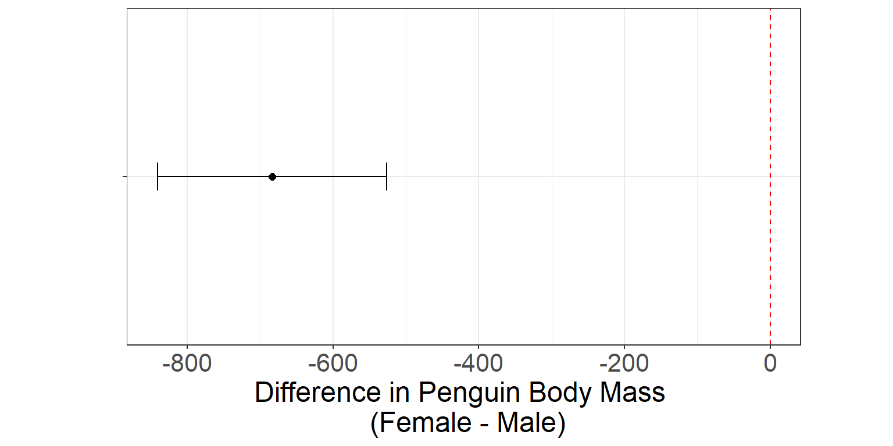
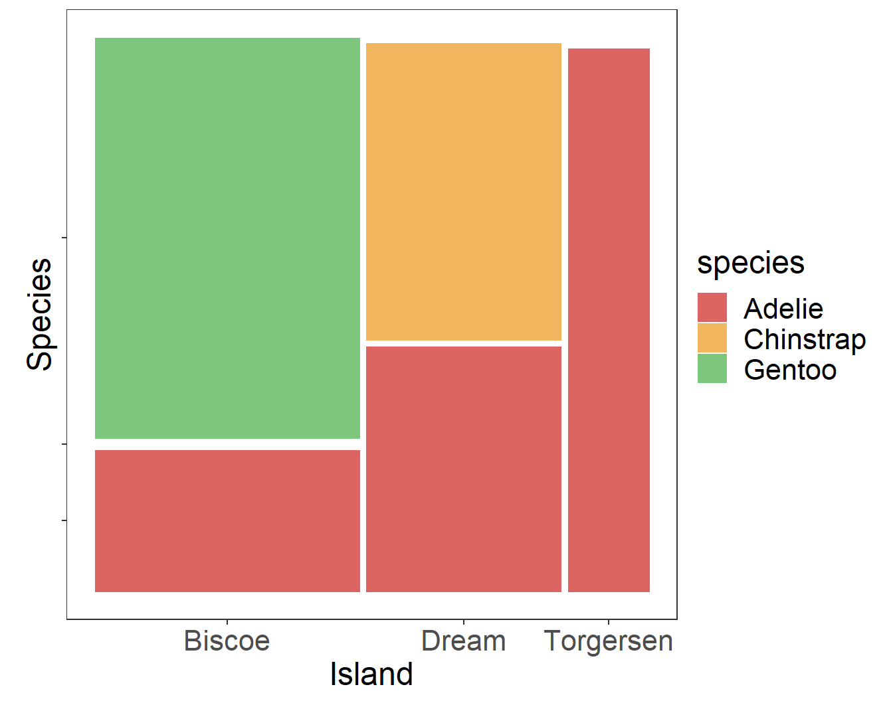
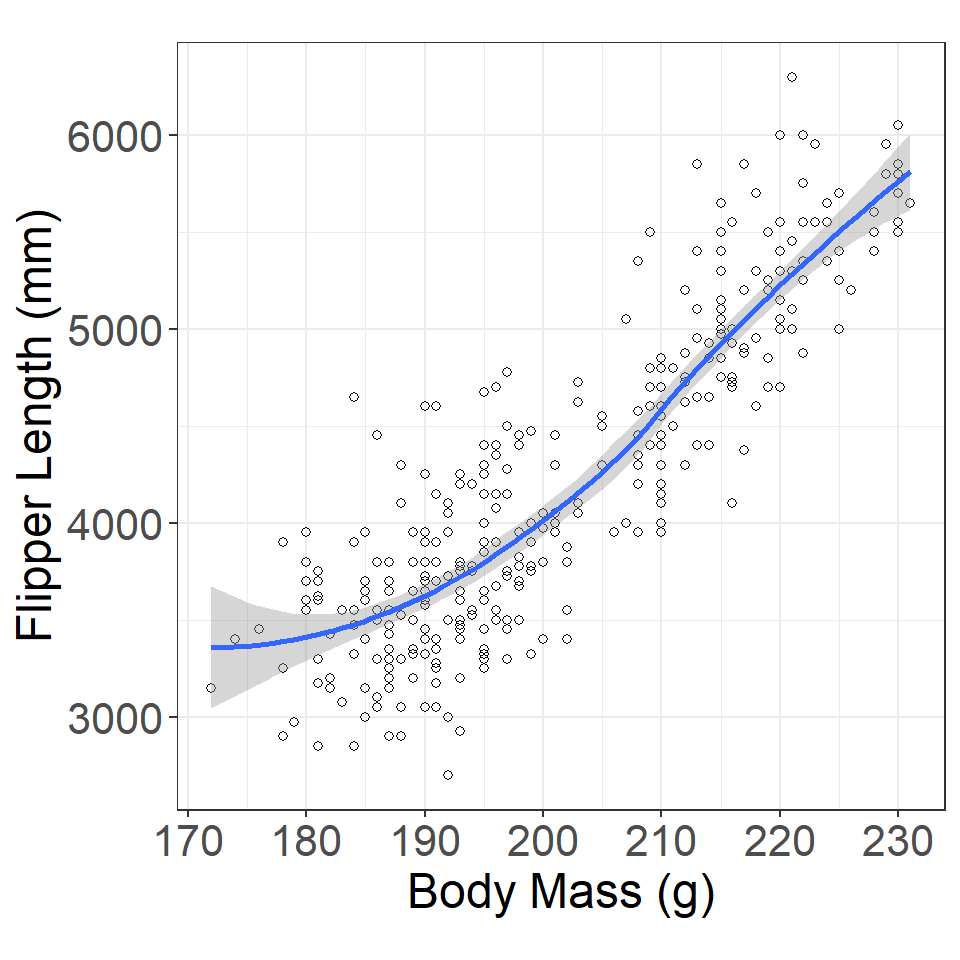
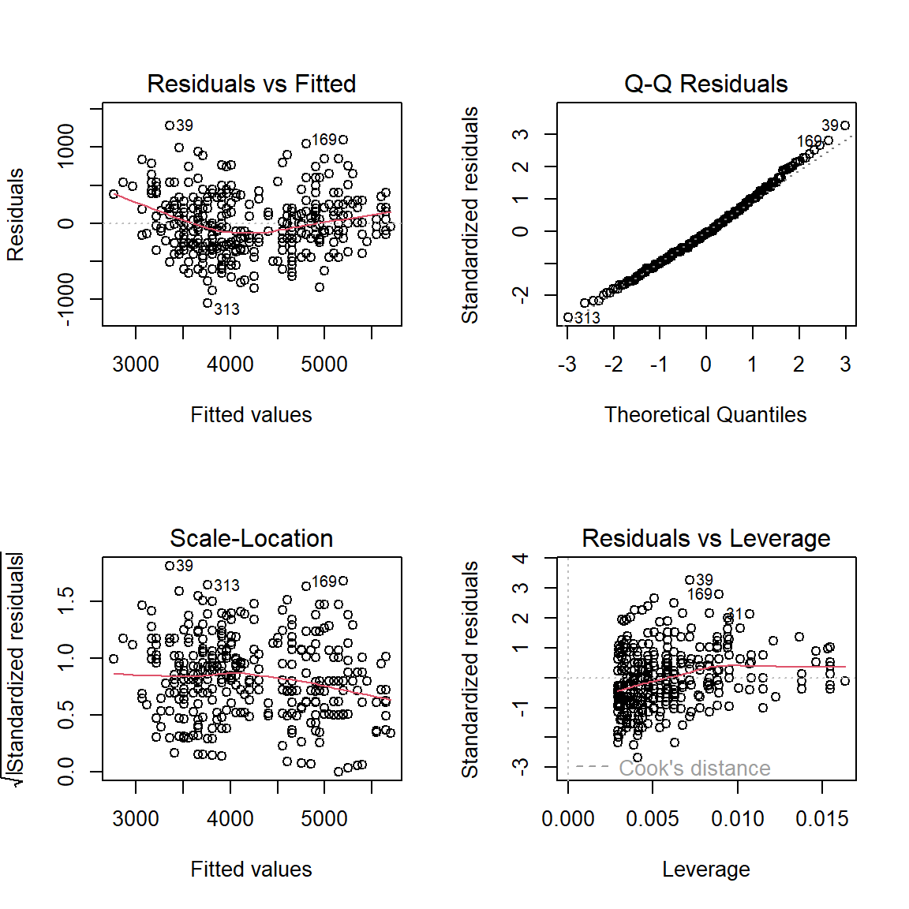
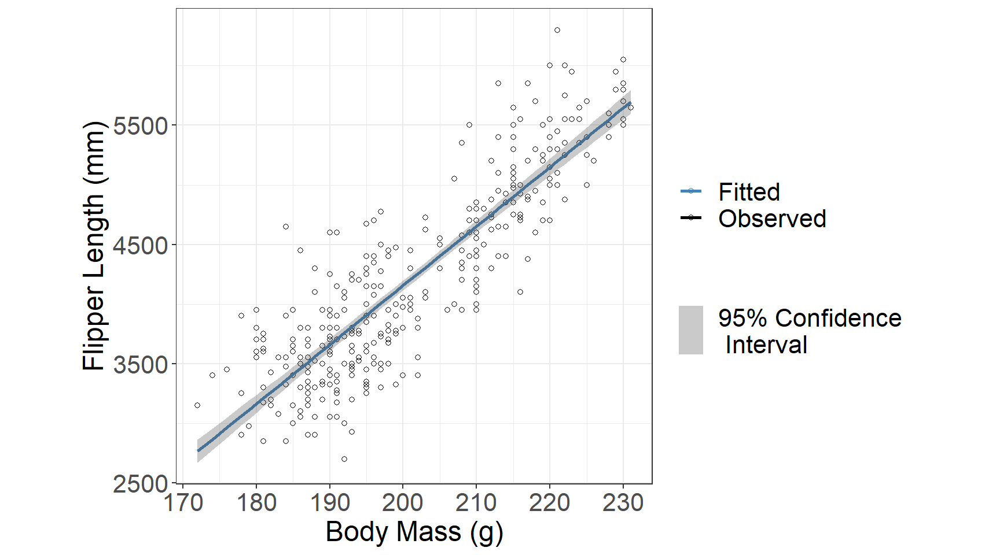
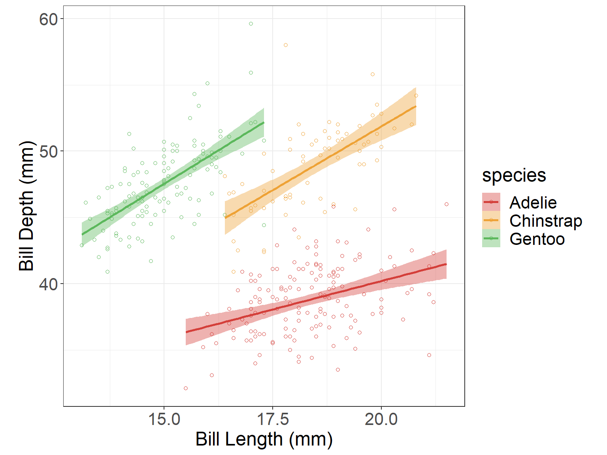

Basic Statistical Tests
Outline
p-values
confidence intervals
t-tests
chi-square tests
simple regression
Five Step Hypothesis Testing Procedure
Step 1: State your null and alternate hypothesis.
Step 2: Collect data.
Step 3: Perform a statistical test.
Step 4: Decide whether to reject or fail to reject your null hypothesis.
Step 5: Present your findings.
- Step 1: State your null and alternate hypothesis.
- (the prediction that you want to investigate)
- The alternate hypothesis is usually your initial hypothesis that predicts a relationship between variables. The null hypothesis is a prediction of no relationship between the variables you are interested in.
- Step 2: Collect data.
- For a statistical test to be valid, it is important to perform sampling and collect data in a way that is designed to test your hypothesis. If your data are not representative, then you cannot make statistical inferences about the population you are interested in.
- Step 3: Perform a statistical test.
- There are a variety of statistical tests available, but they are all based on the comparison of within-group variance (how spread out the data is within a category) versus between-group variance (how different the categories are from one another).
- Step 4: Decide whether to reject or fail to reject your null hypothesis.
- Based on the outcome of your statistical test, you will have to decide whether to reject or fail to reject your null hypothesis.
- In most cases you will use the p-value generated by your statistical test to guide your decision. And in most cases, your predetermined level of significance for rejecting the null hypothesis will be 0.05 – that is, when there is a less than 5% chance that you would see these results if the null hypothesis were true.
- Step 5: Present your findings.
- The results of hypothesis testing will be presented in the results and discussion sections of your research paper.
Statistical Hypotheses
Null Hypothesis what we are hoping to disprove?
Alternative Hypothesis if random chance isn’t the reason, then what?
What is a p-value?

The p-value is the probability of observing the data we saw under the null hypothesis (\(H_0\))
A p-value is the area under the reference distribution where values are as or more extreme than the hypothesized value.
If the p-value is low (p \(< \alpha\)), where \(\alpha = 0.05, 0.01,\) or another pre-specified value) then we know that it is relatively unlikely to observe our data under \(H_0\) which means that it is more likely that \(H_0\) is false and \(H_A\) is true.
What is a p-value?
What is a confidence interval?
Image source: Susan VanderPlas UNL Extension
Sometimes, we don’t want to test whether a parameter is equal to a specific value - instead, we might want to know what that value is (or at least, a range of possible values for that parameter).
In this case, we construct a confidence interval - a set of plausible values for the parameter.
We can think of a confidence interval as our best estimate of the parameter value + uncertainty.
Confidence intervals, like hypothesis tests, are conducted based on a parameter \(\alpha\) representing the acceptable level of error. If we want to be 95% confident in our estimate, our interval will be wider than if we want to be 90% confident in our estimate – we have to include more values to get a wider interval.
Penguins Data
data(penguins, package = "palmerpenguins")
Two-sample independent t-test
Research Question Is there a difference in the body mass (g) of penguins between male and female penguins?
Data
| sex | body_mass_g |
|---|---|
| male | 3750 |
| female | 3800 |
| female | 3250 |
Numerical Summary
| sex | mean | sd |
|---|---|---|
| female | 3862.3 | 666.2 |
| male | 4545.7 | 787.6 |
Graphical Summary

Two-sample t-test
help(t.test)
t.test(y ~ x,
data = data_name,
alternative = “two.sided”,
mu = 0,
paired = FALSE,
var.equal = FALSE,
conf.level = 0.95)- y: The variable name of the quantitative response.
- x: The variable name of the grouping variable (or treatment).
- data: The name of the data set
- alternative: The alternative hypothesis. Options include “two.sided”, “less”, or “greater.”
- mu: The value assumed to be the true difference in means.
- paired: Whether or not to use a paired t-test.
- var.equal: Whether or not the variances are equal between the two groups.
- conf.level: The confidence level to use for the test.
Test for equal variances
library(car)
leveneTest(penguins2$body_mass_g, group = penguins2$sex, center = mean)Levene's Test for Homogeneity of Variance (center = mean)
Df F value Pr(>F)
group 1 9.3374 0.002428 **
331
---
Signif. codes: 0 '***' 0.001 '**' 0.01 '*' 0.05 '.' 0.1 ' ' 1Two-sample independent t-test
- Null: the mean body mass for female penguins is equal to the mean body mass for male penguins (female - male \(= 0\))
- Alternative: the mean body mass for female penguins is not equal to the mean body mass for male penguins (female - male \(\ne 0\))
penguins_ttest <- t.test(body_mass_g ~ sex, data = penguins2) #<<
penguins_ttest
Welch Two Sample t-test
data: body_mass_g by sex
t = -8.5545, df = 323.9, p-value = 4.794e-16
alternative hypothesis: true difference in means between group female and group male is not equal to 0
95 percent confidence interval:
-840.5783 -526.2453
sample estimates:
mean in group female mean in group male
3862.273 4545.685 Two-sample independent t-test (table results)
Extract specific output
penguins_ttest$statistic
penguins_ttest$df
penguins_ttest$p.valueSummarize results with library(broom)
install.packages("broom")
library(broom)
penguins_results <- tidy(penguins_ttest) #<<
penguins_results| estimate | estimate1 | estimate2 | statistic | p.value | parameter | conf.low | conf.high | method | alternative |
|---|---|---|---|---|---|---|---|---|---|
| -683.4 | 3862.3 | 4545.7 | -8.6 | <0.001 | 323.9 | -840.6 | -526.2 | Welch Two Sample t-test | two.sided |
Two-sample independent t-test (graphical results)
ggplot(penguins_results, aes(x = NA, y = estimate)) +
geom_point(size = 2) +
geom_errorbar(aes(ymin = conf.low, ymax = conf.high), width = 0.2) +
geom_hline(yintercept = 0, linetype = "dashed", color = "red") +
theme_bw() +
theme(aspect.ratio = 0.5, axis.text.y = element_blank()) +
xlab("") + ylab("Difference in Body Mass \n (Female - Male)") +
coord_flip()
Your Turn
What if you wanted the difference to be male - female? (Hint: use
relevel())The default confidence level is 95%, how would you change it to a 90% confidence level?
- Does your p-value change?
- How about your confidence interval?
Your Turn
- What if you wanted the difference to be male - female?
levels(penguins2$sex)[1] "female" "male" penguins2$sex <- relevel(penguins2$sex, ref = "male") #<<
levels(penguins2$sex)[1] "male" "female"penguins_ttest2 <- t.test(body_mass_g ~ sex, data = penguins2)
penguins_ttest2| estimate | estimate1 | estimate2 | statistic | p.value | parameter | conf.low | conf.high | method | alternative |
|---|---|---|---|---|---|---|---|---|---|
| 683.4 | 4545.7 | 3862.3 | 8.6 | <0.001 | 323.9 | 526.2 | 840.6 | Welch Two Sample t-test | two.sided |
Your Turn
- The default confidence level is 95%, how would you change it to a 90% confidence level?
- Does your p-value change?
- How about your confidence interval?
[1] 4.793891e-16[1] 526.2453 840.5783
attr(,"conf.level")
[1] 0.95penguins_ttest3 <- t.test(body_mass_g ~ sex,
data = penguins2,
conf.level = 0.9) #<<
penguins_ttest3$p.value
penguins_ttest3$conf.int[1] 4.793891e-16[1] 551.6295 815.1941
attr(,"conf.level")
[1] 0.9Chi-square test of independence
Research Question Are island and the species of penguin associated?
Data
| species | island |
|---|---|
| Adelie | Torgersen |
| Adelie | Torgersen |
| Adelie | Torgersen |
Numerical Summary
species
island Adelie Chinstrap Gentoo
Biscoe 44 0 124
Dream 56 68 0
Torgersen 52 0 0Graphical Summary

Chi-square test of independence
help("chisq.test")
chisq.test(y ~ x,
data = data_name,
simulate.p.value = FALSE,
B = 2000)Chi-square test of independence
chisq.test(penguins3$island, penguins3$species) #<<
Pearson's Chi-squared test
data: penguins3$island and penguins3$species
X-squared = 299.55, df = 4, p-value < 2.2e-16chisq.test(penguins3$island, penguins3$species,
simulate.p.value = T) #<<
Pearson's Chi-squared test with simulated p-value (based on 2000
replicates)
data: penguins3$island and penguins3$species
X-squared = 299.55, df = NA, p-value = 0.0004998Simple Regression
Research Question Is there a relationship between penguin body mass and flipper length?
Data
| body_mass_g | flipper_length_mm |
|---|---|
| 3750 | 181 |
| 3800 | 186 |
| 3250 | 195 |
Numerical Summary
Pearson Correlation
[1] 0.8712018Graphical Summary

Simple Regression
\[y = \text{intercept} + \text{slope} \cdot x + \text{error}\]
help(lm)
regression_mod <- lm(y ~ x, data = data_name)
summary(regression_mod)Simple Regression
penguins_regression <- lm(body_mass_g ~ flipper_length_mm, data = penguins4) #<<
summary(penguins_regression)
Call:
lm(formula = body_mass_g ~ flipper_length_mm, data = penguins4)
Residuals:
Min 1Q Median 3Q Max
-1058.80 -259.27 -26.88 247.33 1288.69
Coefficients:
Estimate Std. Error t value Pr(>|t|)
(Intercept) -5780.831 305.815 -18.90 <2e-16 ***
flipper_length_mm 49.686 1.518 32.72 <2e-16 ***
---
Signif. codes: 0 '***' 0.001 '**' 0.01 '*' 0.05 '.' 0.1 ' ' 1
Residual standard error: 394.3 on 340 degrees of freedom
Multiple R-squared: 0.759, Adjusted R-squared: 0.7583
F-statistic: 1071 on 1 and 340 DF, p-value: < 2.2e-16Simple Regression (evaluate model)
par(mfrow = c(2,2))
plot(penguins_regression)
par(mfrow = c(1,1))Simple Regression (results)
\[y_{i} = \beta_0 + \beta_1 \cdot x_{i} + \epsilon_{i}\]
- \(y_{i}\) is the body mass (g) for penguin \(i = 1, ..., n\)
- \(\beta_0\) is the intercept coefficient
- \(\beta_1\) is the slope coefficient
- \(x_{i}\) is the flipper length (mm) for penguin \(i = 1, ..., n\)
- \(\epsilon_i\) is the error for penguin \(i = 1, ..., n\) where \(\epsilon \sim N(0, \sigma^2)\)
tidy(penguins_regression) %>%
mutate(p.value = scales::pvalue(p.value))| term | estimate | std.error | statistic | p.value |
|---|---|---|---|---|
| (Intercept) | -5780.83 | 305.81 | -18.90 | <0.001 |
| flipper_length_mm | 49.69 | 1.52 | 32.72 | <0.001 |
\(\text{flipper length}_{i} = -5780.83 + 49.56 \cdot \text{body mass}_{i} + \epsilon_{i}\) where \(\epsilon \sim N(0, \sigma^2)\)
Simple Regression (results)
| term | estimate | std.error | statistic | p.value |
|---|---|---|---|---|
| (Intercept) | -5780.83 | 305.81 | -18.90 | <0.001 |
| flipper_length_mm | 49.69 | 1.52 | 32.72 | <0.001 |
Hypotheses
\[H_0: \beta_1 = 0 \text{ (the slope is equal to 0)}\] \[H_A: \beta_1 \ne 0 \text{ (the slope is not equal to 0)}\]
Conclusion
We have evidence to conclude there is an association between flipper length and body mass (t = 32.72; df = 340; p < 0.0001).
Simple Regression (results)
penguins_preds <- cbind(penguins4, predict(penguins_regression, interval = 'confidence')) #<<
ggplot(penguins_preds, aes(x = flipper_length_mm, y = body_mass_g)) +
geom_point(shape = 1) +
geom_line(aes(y = fitted(penguins_regression))) + #<<
geom_ribbon(aes(ymin = lwr, ymax = upr), alpha = 0.3) #<<
Your Turn: Simple Regression
Fit a linear regression line between bill length and bill depth for each species
